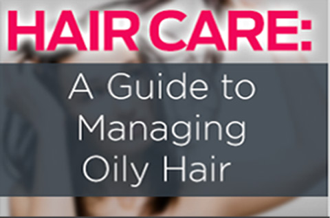
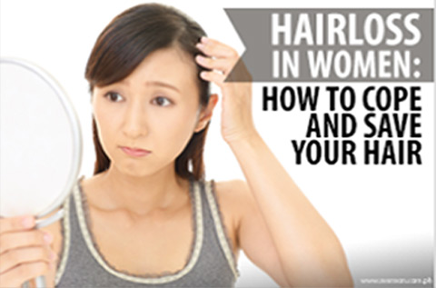

Hairloss in women
YES, IT HAPPENS TO
WOMEN TOO.
Women can also experience hairloss. The emotional effect that it brings is equal or even more than that of men. Since hairloss is thought of usually as a male problem, hairloss treatments for women are sometimes ignored. However, Svenson is able to offer the best treatments available for women suffering this condition.

In order to identify the stage of hairloss that you are in, you can use the Norwood Hairloss Chart. It can help you detect the type of hairloss progression you are in and whether you will be undergoing a hairloss prevention treatment or hair restoration treatment.
Women HairLoss Patern | Norwood Hairloss Chart
Solutions
For Women
In order to identify the stage of hairloss that you are in, you can use the Norwood Hairloss Chart. It can help you detect the type of hairloss progression you are in and whether you will be undergoing a hairloss prevention treatment or hair restoration treatment.
-
Prevention
They say an ounce of prevention is better than a pound of cure.
We agree.
And so we give you the world’s best preventive treatment programs for hair loss. Our team of trichologists will give you a thorough diagnosis and tailor a program that best fits your unique situation, preventing further hair loss so you can maintain your strong, healthy hair.
Learn More -
Restoration
If you were unable to seek professional help sooner, we’ve got other options to solve your baldness problem.
One proven method is our Hair Integration System. It’s fuss-free and non-invasive. Just natural hair interwoven to your own hair strands, instantly giving you fuller, thicker hair.
For fuller coverage, you can have the most advanced non-invasive hair replacement system today: Transdermal Cosmetic Reconstruction or TCR. It’s super thin synthetic skin with natural hair implanted in it. Bonded to your scalp using a
Learn More -
Hair transplant
Svenson offers the complete package for people suffering from hair loss.
Our plastic surgeons are all board-certified and aesthetically trained, capable of transplanting up to 4,000 grafts in one mega session. They can restore your full head of hair and create a natural-looking hairline that fits your unique facial structure.
We also offer pre- and post-transplant hair care programs to ensure that both the hair and scalp remain healthy....
Learn More
Hair Care Tips
For Women
-

5 Hair Care Tips for the Holiday Season
The Christmas season brings joyous parties, reunions, and wonderful feasts. It’s that time of the year when we make sure to look our best...
-

5 Hair Care Tips for the Holiday Season
The Christmas season brings joyous parties, reunions, and wonderful feasts. It’s that time of the year when we make sure to look our best...
-

5 Hair Care Tips for the Holiday Season
The Christmas season brings joyous parties, reunions, and wonderful feasts. It’s that time of the year when we make sure to look our best...